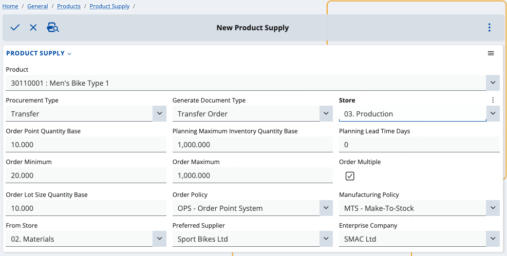
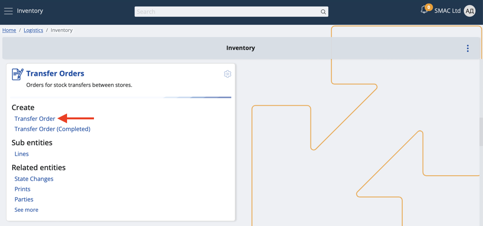
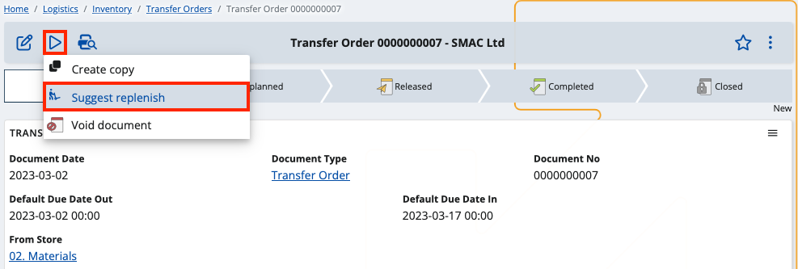

Replenishing suggestions for transfer orders
If during transfers your main store is running low on product quantities, you can take advantage of replenishing suggestions to restore the supply to a desired number.
By following the steps below, while issuing transfer orders, you'll be able to generate lines exclusively for replenishing product quantities.
Prerequisites
For the feature to work as expected, you need to have done two things in advance:
- Define a product supply suited for transfer orders.
Go to General -> Products and select Product Supply. From there, add a new supply with the plus button.

Make sure to go through each field carefully.
Suggested replenishment requires specific values for certain fields in order to work.

- Product - The product for which the supply (and a transfer order) will be made.
- Procurement Type - The type of action associated with this product (in this case, choose Transfer).
- Generate Document Type - The type of document which will be issued according to the supply rules (leave this as Transfer Order).
- Store - The store for which this product supply (and replenishment) will be made.
- Order Point Quantity Base - Quantity the product must drop to for replenishment to be triggered.
- Planning Maximum Inventory Quantity Base - Maximum possible quantity of product in the store.
- Planning Lead Time Days - Days needed to supply or manufacture the product.
- Order Minimum - Minimum quantity of product that can be ordered at a time.
- Order Maximum - Maximum quantity of product that can be ordered at a time.
- Order Multiple - Tick this box to make the product quantity multiple by lot size.
- Order Lot Size Quantity Base - The lot size value.
- Order Policy - The policy the replenishment system will follow (leave this as OPS - Order Point System).
- Manufacturing Policy - Used when the procurement type is Make.
- From Store - The store from which product quantities will be requested (identical in the transfer order)
- Preferred Supplier - Name of the supplier who must have produced the product (will be identical in the transfer order).
- Enterprise Company - Name of the enterprise company associated with the product supply (identical in the transfer order).
When done, save the product supply.
- Create a new transfer order from the Logistics -> Inventory module or open an existing one.

The status of the document should be below Released - most often New.
Make sure the product, output store and materials store and are identical to the ones you defined for the product supply.

Use Suggest replenish
You can apply the Suggest replenish feature from within your existing transfer order document.
Click the play button and select Suggest replenish.

If the order has lines, they will be removed and new ones will be automatically generated for suggested product quantity replenishing.